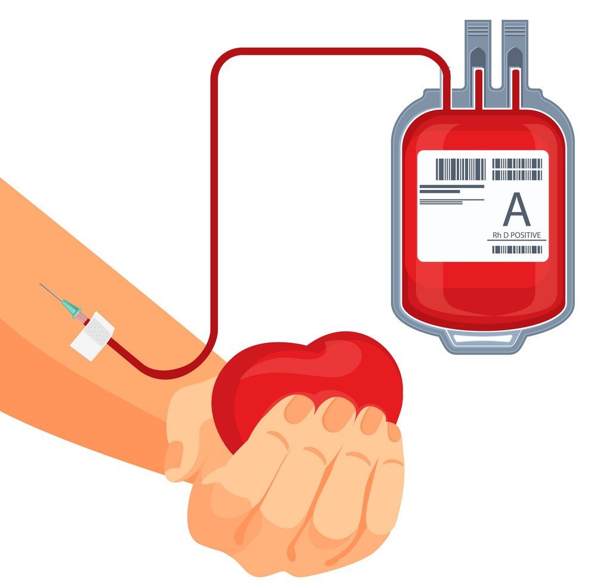
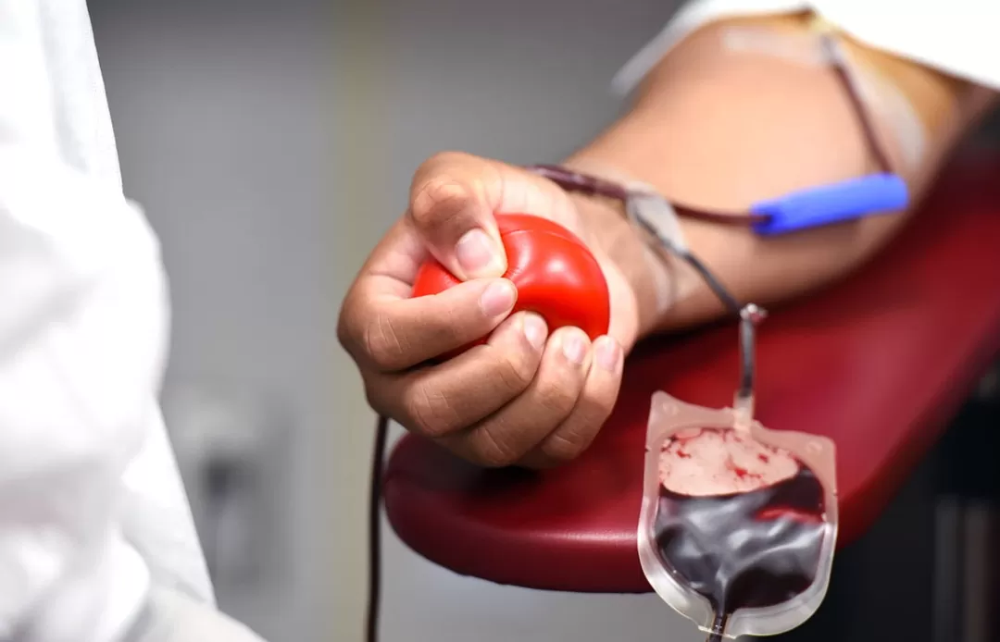

You’ll be asked to show ID, such as your driver’s license.
You’ll read some information about donating blood.
We’ll ask you for your complete address.
Your address needs to be complete (including PO Box, street/apartment number) and the place where you will receive your mail 8 weeks from donation.
Process Of Donation

If you’re donating whole blood, we’ll cleanse an area on your arm and insert a brand new sterile needle for the blood draw. (This feels like a quick pinch and is over in seconds).
Other types of donations, such as platelets, are made using an apheresis machine which will be connected to both arms.
A whole blood donation takes about 8-10 minutes, during which you’ll be seated comfortably or lying down.
When approximately a pint of whole blood has been collected, the donation is complete and a staff person will place a bandage on your arm.
For platelets, the apheresis machine will collect a small amount of blood, remove the platelets, and return the rest of the blood through your other arm; this cycle will be repeated several times over about 2 hours.
Eligibility Guidelines
Age:
You are aged between 18 and 65.
Weight:
You weigh at least 50 kg.
Health:
You must be in good health at the time you donate.
You cannot donate if you have a cold, flu, sore throat, cold sore, stomach bug or any other infection.
If you have recently had a tattoo or body piercing you cannot donate for 6 months from the date of the procedure.
If the body piercing was performed by a registered health professional and any inflammation has settled completely, you can donate blood after 12 hours.
If you have visited the dentist for a minor procedure you must wait 24 hours before donating; for major work wait a month.
You must not donate blood If you do not meet the minimum haemoglobin level for blood donation
A test will be administered at the donation site. In many countries, a haemoglobin level of not less than 12.0 g/dl for females and not less than 13.0 g/dl for males as the threshold.
Post Donation

After donating, you sit in an observation area, where you rest and eat a light snack. After 15 minutes, you can leave.
After your blood donation Drink extra fluids.
Avoid strenuous physical activity or heavy lifting for about five hours.
If you feel lightheaded, lie down with your feet up until the feeling passes.
Keep your bandage on and dry for the next five hours.
If you have bleeding after removing the bandage, put pressure on the site and raise your arm until the bleeding stops.
If bruising occurs, apply a cold pack to the area periodically during the first 24 hours.
Consider adding iron-rich foods to your diet to replace the iron lost with blood donation.
Contact the blood donor center or your health care provider if you:
Forgot to report any important health information to the blood donation center.
Have signs and symptoms of an illness, such as a fever, within several days after your blood donation.
Are diagnosed with COVID-19 within 48 hours after donating blood.


 E-mail>
E-mail> Facebook
Facebook Instagram
Instagram Youtube
Youtube